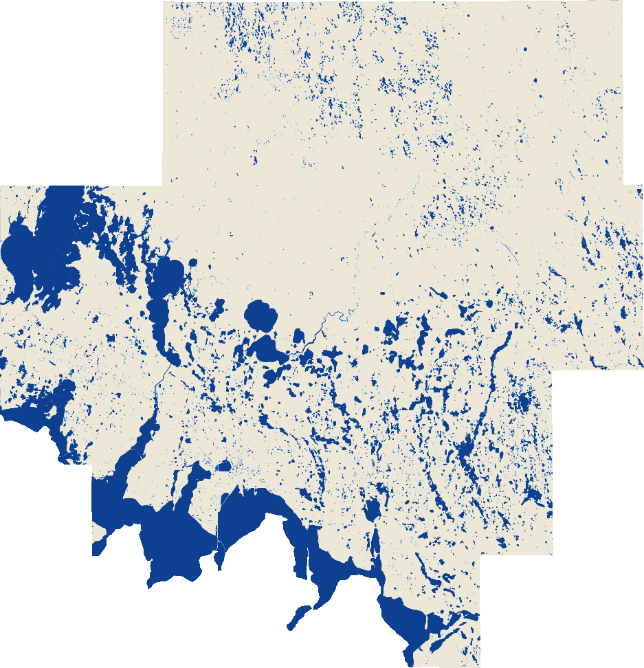
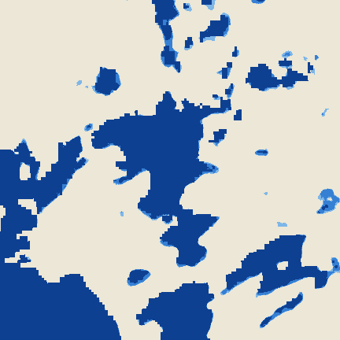

Planting Season Water Persistence layer
Standing water.
Standing water.
Seen over time.
Follow the water through the planting season. Explore satellite-derived maps at 3-metre resolution, across Prairie Pothole counties in North and South Dakota.



3 m detailRamsey County, ND · 2025Sample preview
90%
80%
70%
Dry
How it’s made
Many days, stacked into one map
- Daily satellite imagesMid-March to late June.
- Water detected each dayEvery 3 m pixel is labelled water or dry.
- Days stackedThe share of clear days under water sets the persistence cutoff.
Field validated
Checked against 884 field photos
Field photographs from Ramsey County, ND, compared with the nearest-date detection. Other counties may differ.
Evidence of field conditions — not an eligibility decision. This layer is not a prevented-planting eligibility determination. Read the cautions
What’s new
All updates
Latest data updates
Need an account?
Accounts are issued to insurance-company and .gov email addresses after review by the UIUC team.